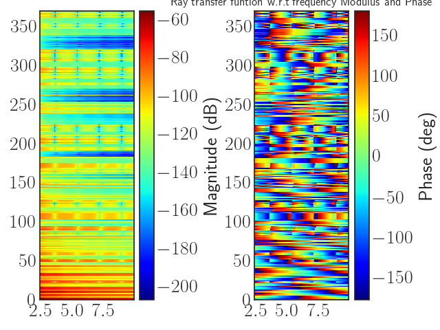

Evaluation of a radio link DLink¶
Load a Layout, set the transmitter and receiver position and evaluates the link
Out:
Warning Unable to read graph Gr
Warning Unable to read graph Gw
Warning Unable to read graph Gr
Warning Unable to read graph Gw
Layout Graph loaded
Warning Unable to read graph Gr
Warning Unable to read graph Gw
Warning Unable to read graph Gr
Warning Unable to read graph Gw
Warning Unable to read graph Gr
Warning Unable to read graph Gw
from pylayers.simul.link import *
import pylayers.signal.waveform as wvf
# set the frequency range from 2.4GHz to 10GHz
fGHz=np.arange(2.4,10.,0.05)
# set the layout from its filename
L=Layout('defstr.ini')
# set the link
DL=DLink(L=L,fGHz=fGHz)
# set the b point position
DL.a=np.array([2,3,1.2])
DL.b=np.array([8,3.5,2.])
# evaluate the link in forcing re-calculation of
#
# + signatures
# + rays
# + Tilded(*) Propagation Channel
# + Transmission Channel H
#
# Diffraction : enabled
# Vectorization : enabled
#
DL.eval(cutoff=4,ra_vectorized=True,diffraction=True)
DL.H.show()
plt.title('Ray transfer funtion w.r.t frequency Modulus and Phase')
plt.show()
Total running time of the script: (0 minutes 0.410 seconds)
Download Python source code:
plot_exDLink.py
Download IPython notebook:
plot_exDLink.ipynb